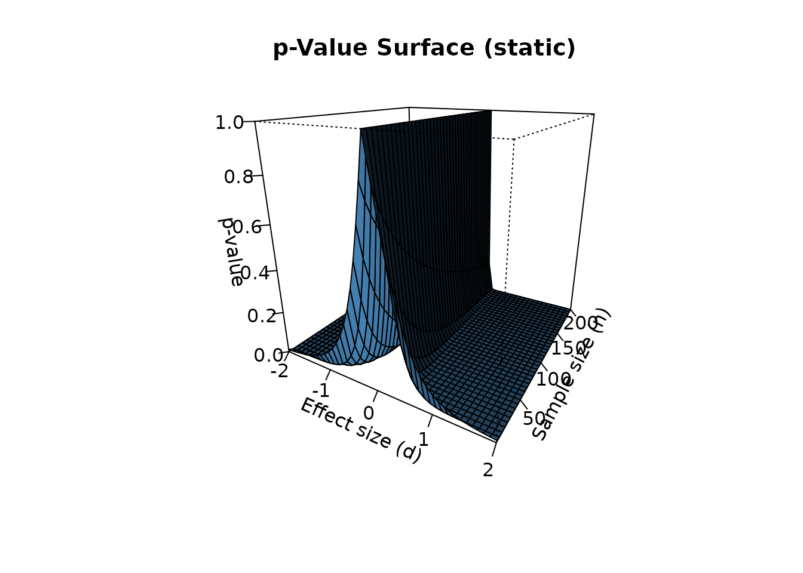
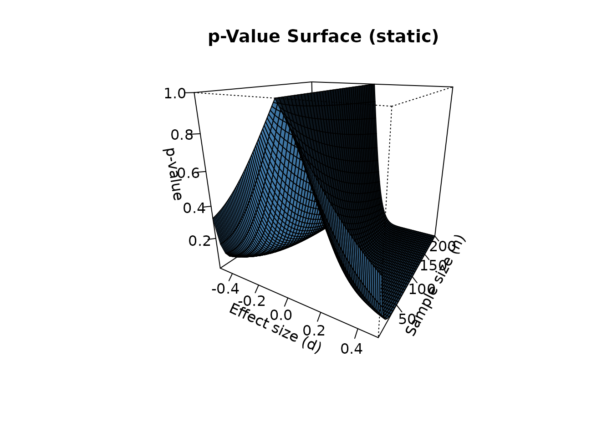

Introduction
The p-value is a continuous measure of statistical evidence, yet in practice it is often reduced to a binary decision: p < 0.05 is “significant”, p ≥ 0.05 is “not significant”. This dichotomous thinking is a major contributor to the reproducibility crisis in science.
The p3d package visualizes the p-value of a single-sample t-test as a three-dimensional surface over two parameters:
- Effect size (d, Cohen’s d)
- Sample size (n)
This vignette demonstrates the core functionality of the package.
The p-value surface
The central function of the package is p_surface().
Given a range of effect sizes and sample sizes, it computes the p-value
for each combination:
surface <- p_surface(
d = seq(-2, 2, 0.1),
n = seq(5, 200, 5)
)
str(surface, max.level = 1)
#> List of 6
#> $ d : num [1:41] -2 -1.9 -1.8 -1.7 -1.6 -1.5 -1.4 -1.3 -1.2 -1.1 ...
#> $ n : num [1:40] 5 10 15 20 25 30 35 40 45 50 ...
#> $ p : num [1:41, 1:40] 0.0111 0.0132 0.0158 0.0191 0.0232 ...
#> $ d_crit: num [1:40] 1.242 0.715 0.554 0.468 0.413 ...
#> $ alpha : num 0.05
#> $ grid :'data.frame': 1640 obs. of 5 variables:
#> ..- attr(*, "out.attrs")=List of 2The result is a list with several components:
-
d: the vector of effect sizes -
n: the vector of sample sizes -
p: a matrix of p-values (dimensionslength(d)×length(n)) -
d_crit: critical effect sizes at α = 0.05 for each n -
alpha: the significance level -
grid: a tidy data frame with all combinations
Inspecting the results
For example, the p-value at d = 0.5, n = 30 is:
surface$p[surface$d == 0.5, surface$n == 30]
#> [1] 0.01043739The critical effect size at n = 30 is:
surface$d_crit[surface$n == 30]
#> [1] 0.3734061This means: with 30 observations, an effect size of at least 0.37 is required for statistical significance at α = 0.05.
Static 3D visualization
The simplest way to visualize the surface is
plot_p_static(), which uses base R graphics and has
no external dependencies:
plot_p_static(surface)
This is ideal for PDF output, journal figures, and printed reports.
Interactive 3D visualization
For interactive exploration, use plot_p_surface() with
the plotly engine:
plot_p_surface(surface, engine = "plotly")Alternatively, the rgl engine provides a native R
window:
plot_p_surface(surface, engine = "rgl")Both engines allow rotation, zooming, and panning.
2D comparison
For comparison with existing 2D packages such as
pvaluefunctions, use p_curve_2d():
curve_30 <- p_curve_2d(d = seq(-2, 2, 0.1), n = 30)
head(curve_30)
#> d p significant
#> 1 -2.0 8.021139e-12 TRUE
#> 2 -1.9 2.650857e-11 TRUE
#> 3 -1.8 9.099432e-11 TRUE
#> 4 -1.7 3.247269e-10 TRUE
#> 5 -1.6 1.205427e-09 TRUE
#> 6 -1.5 4.654771e-09 TRUEThe 2D curve is mathematically equivalent to a slice of the 3D surface at fixed n.
Real-data example
Let’s apply p3d to a real dataset. The
mtcars dataset contains fuel consumption (mpg) for 32
automobiles. Suppose we want to test whether the mean mpg is different
from 20:
x <- mtcars$mpg
d_obs <- (mean(x) - 20) / sd(x)
n_obs <- length(x)
cat("Observed effect size:", round(d_obs, 4), "\n")
#> Observed effect size: 0.015
cat("Sample size:", n_obs, "\n")
#> Sample size: 32The p-value for this single observation is:
By placing this observation on the 3D surface, we can see how the same effect size would behave at different sample sizes:
surface_real <- p_surface(
d = seq(-0.5, 0.5, 0.01),
n = seq(5, 200, 5)
)
plot_p_static(surface_real, theta = 30, phi = 20)
Conclusion
The p3d package provides a three-dimensional perspective on the p-value. By visualizing the p-value simultaneously across effect size and sample size, it reveals:
- The continuous nature of the p-value (it is not a binary switch)
- The moderating effect of sample size on statistical significance
- The interaction between effect size and sample size
This complements traditional 2D visualizations and helps weaken the dichotomous thinking that plagues statistical practice.